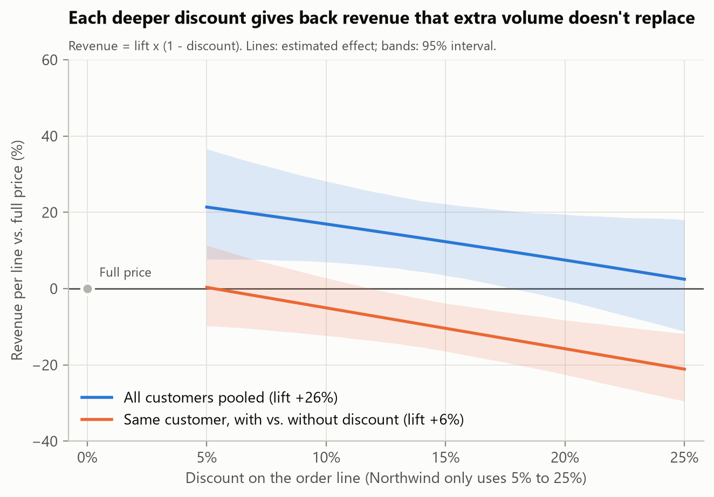
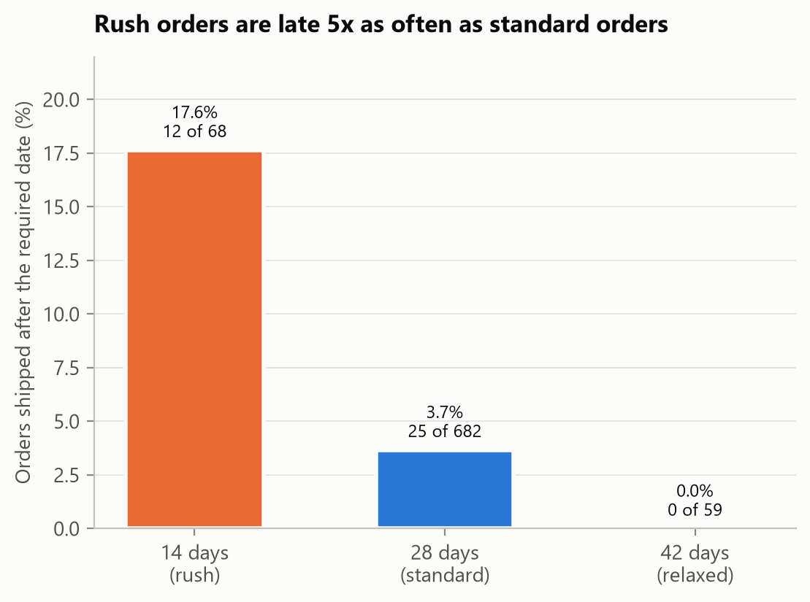
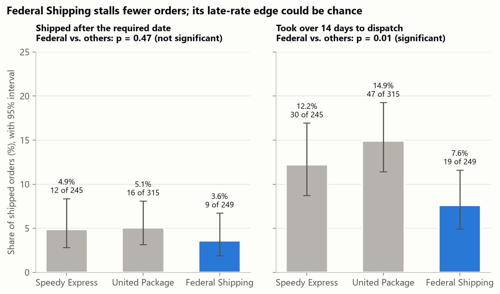
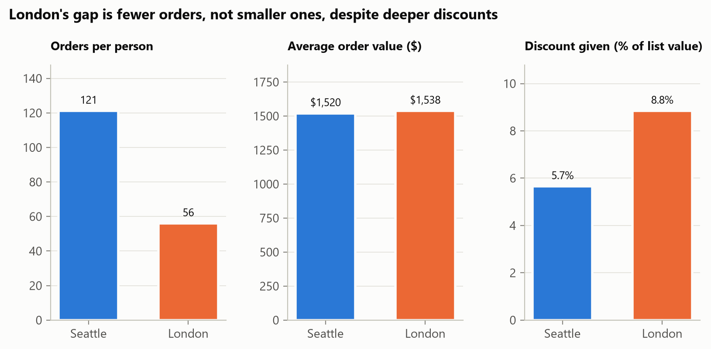
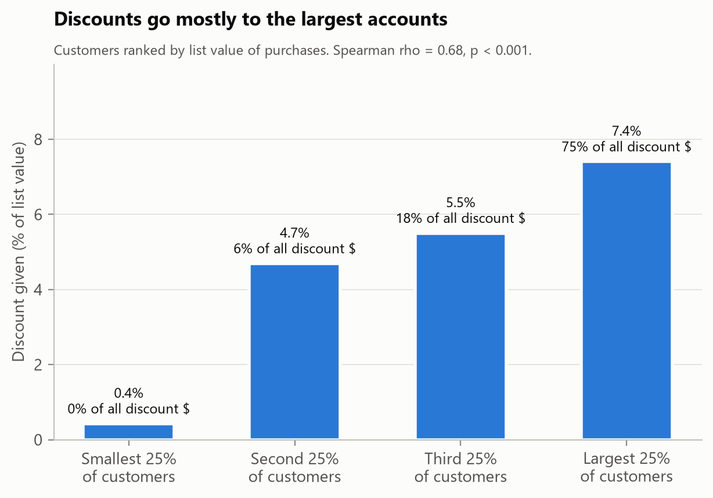

15.561 · Homework 3 · Northwind Traders, Jul 1996 – May 1998
Where Northwind gives away revenue and misses deadlines
An analysis of 830 orders and $1.27M in net revenue for Northwind's sales manager. Three questions cover how the company discounts, ships, and sells, and each answer ends with a decision the manager can make.
Question 1
How much extra volume does a discount buy, and is it worth what it costs?
Why it matters
Northwind gave away $88,666 in discounts, 6.6% of the list value of everything it sold, and 46% of orders had at least one discounted line. A discount only grows revenue if the extra volume it brings outweighs the lower price. To judge that, the manager needs to know how much volume each discount level actually buys.
Approach
- Analyzed the 2,147 order lines at a standard discount (0, 5, 10, 15, 20, or 25%). Each line's quantity is compared with the same product's median quantity at full price, so a cheese and a case of beer can be compared. A value of 1.3x means 30% more than usual.
- Generalizing the lift. A regression estimates two effects: the jump from giving any discount, and
the extra lift from each additional discount point. It is run twice:
- Pooled: compares discounted and full-price lines across all customers.
- Same customer: compares each customer's discounted lines only with that customer's own full-price lines (customer fixed effects). This removes the fact that big buyers both get more discounts and buy more anyway.
- Revenue gained or lost. A line sold at discount d brings in
lift × (1 − d)times what it would have at full price. This uses only the order data, with no assumption about costs. A discount that loses revenue also loses profit, because the extra units still cost something to supply. A discount that gains revenue may or may not gain profit; that depends on costs Northwind's data doesn't include.

| Estimate | Lift from any discount (95% CI) | p | Extra lift per added point | p | Revenue effect of all discounts |
|---|---|---|---|---|---|
| Pooled, all customers | +25.6% (+7.2% to +47.2%) | 0.005 | +0.3% | 0.50 | +$57,420 |
| Same customer only | +5.7% (−8.2% to +21.7%) | 0.44 | −0.0% | 0.96 | −$57,696 |
Table: outputs/q1_lift_models.csv. Lift is the change in quantity relative to the product's full-price
median. Revenue effect = actual revenue on the 830 discounted lines minus what they would have brought in at full price on the
volume implied without the lift.

| Revenue per line vs. full price | 5% | 10% | 15% | 20% | 25% |
|---|---|---|---|---|---|
| Pooled lift (+26%) | +21% | +17% | +12% | +7% | +2% |
| 95% interval | +8 to +37 | +7 to +28 | +3 to +22 | −3 to +19 | −11 to +18 |
| Same-customer lift (+6%) | +0% | −5% | −10% | −16% | −21% |
| 95% interval | −10 to +11 | −12 to +3 | −16 to −4 | −23 to −8 | −30 to −12 |
Table: outputs/q1_revenue_curves.csv. Highlighted cells have a 95% interval entirely above (blue) or
below (orange) zero. The data can't say anything about discounts under 5%.
Main finding
The lift generalizes to "about +26% for any discount, and no more for deeper ones." The extra lift per added point is about 0.3% and indistinguishable from zero. A 25% discount buys about the same volume as a 5% one.
Even that +26% mostly isn't caused by the discount. Comparing each customer with themselves, the lift drops to +6% and is no longer statistically significant. Large customers both buy more and get discounts, which inflates the pooled number.
Deeper discounts give back revenue that volume doesn't replace. Under both estimates, every 5 extra points of discount lowers revenue per line by about 5 points, because the price falls while volume stays the same. A 5% discount brings in more revenue than any deeper discount. On the more credible same-customer comparison, discounts of 15% and above lose revenue outright (10–21% per line, intervals below zero), so they lose profit too, whatever the costs. Whether discounting as a whole paid off depends on which estimate is right: +$57K pooled versus −$58K for the same customer.
Business implication
- Make 5% the most a rep can give without sign-off. Above that, require manager approval and a volume commitment in return. Today 15–25% discounts make up 80% of all discount dollars, and that is exactly the range where revenue is lost.
- Stop treating discounts as a volume lever. The evidence says they mostly go to customers who would have bought anyway (see Q3). If they are meant to reward loyalty, make that explicit with a volume-tier price list.
- Test before going further. Offering 5% vs. full price to comparable accounts for one quarter would show whether the +26% or the +6% lift is the real one, and so whether even 5% is worth keeping.
Caveat: this is observational data, not an experiment. The same-customer estimate removes differences between customers, but not reasons a customer might get a discount on an unusually large order. Any remaining bias of that kind would make discounts look more effective than they are.
Question 2
What drives late shipments, and is Federal Shipping actually better?
Why it matters
A missed delivery date is a broken promise to a customer. Before changing processes or shipping contracts, the manager needs to know how much lateness comes from Northwind's own deadlines and dispatch, and whether one shipper is reliably better than the others.
Approach
- Used the 809 shipped orders. The 21 orders placed between 8 Apr and 6 May 1998 had not shipped when the data ends.
- An order is late if
ShippedDateis afterRequiredDate. An order is stalled if it took more than 14 days to dispatch.ShippedDaterecords when the order left Northwind, so both measure dispatch, not carrier transit. - Compared Federal Shipping with the other two shippers in three ways. A chi-square test checks all three shippers at once. A Fisher exact test compares Federal with the other two combined. A logistic regression controls for the promised window, plus order value and line count for stalls. Shippers get a similar mix of rush, standard, and relaxed orders, so the comparison is fair.



| Outcome | Federal | Others | Test | Effect | p |
|---|---|---|---|---|---|
| Shipped late | 3.6% | 5.0% | Chi-square, all three | 0.68 | |
| Fisher exact, Federal vs. others | odds ratio 0.71 | 0.47 | |||
| Logistic, controls for promised window | odds ratio 0.65 | 0.28 | |||
| Stalled over 14 days | 7.6% | 13.8% | Chi-square, all three | 0.03 | |
| Fisher exact, Federal vs. others | odds ratio 0.52 | 0.013 | |||
| Logistic, controls for window, value, lines | odds ratio 0.51 | 0.013 | |||
| Days to dispatch (median) | 6 | 7 | Mann-Whitney | 0.018 | |
| Freight ÷ order value (median) | 5.1% | 4.9% | Kruskal-Wallis, all three | 0.52 |
Tables: outputs/q2_shipper_tests.csv, outputs/q2_by_shipper.csv,
outputs/q2_by_promised_window.csv. Two outcomes are tested, and the stall result stays significant after a
Bonferroni correction (0.013 < 0.025).
Main finding
The biggest driver is the promise, not the carrier. Rush orders are dispatched on the same schedule as everything else (median 7.5 vs. 7 days), so 17.6% of them are late, against 3.7% of standard orders. Every one of the 37 late orders sat at least 15 days before leaving.
But the shippers aren't all the same. Federal Shipping is measurably better at getting orders out the door. Only 7.6% of its orders stall for more than 14 days, against 12.2% for Speedy Express and 14.9% for United Package. That halves the odds (odds ratio 0.51) and holds after controlling for order mix (p = 0.013). Its lower late rate (3.6% vs. 5.0%) points the same way but is not significant: with only 37 late orders in total, a gap of a few orders could easily be chance. Federal costs the same in freight relative to order value.
Business implication
- Prioritize rush orders at dispatch (a separate queue or same-week pick), or stop promising 14 days. This targets a third of all late orders.
- Route rush orders, and by default all orders, through Federal Shipping. It stalls fewer orders, at no extra freight cost. Since stalls are what turn into late orders, this should reduce lateness over time. Track it to confirm.
- Ask why Federal dispatches faster. The data can't say: more frequent pickups are one possible reason. If so, ask Speedy Express and United Package to match the pickup schedule rather than dropping them.
- Flag any order not dispatched within 10 days. That would have covered 142 orders (18%), including all 37 that ended up late, while there was still time to act.
Question 3
Why does London sell less, and are the discounts reps give justified?
Why it matters
London's four staff bring in less than half as much revenue per person as Seattle's five, while giving deeper discounts. Before setting targets or discount rules, the manager needs to know where the gap comes from, and whether the visible link between discounts and sales means discounts are earning their keep.
Approach
- Splitting the gap. Revenue per person = orders per person × average order value. Comparing the two parts shows whether London takes fewer orders or smaller ones.
- Where discounts go. Customers are ranked into four equal groups by the list value of what they bought (before discounts, so a discount can't move a customer down a group), and each group's discount rate is compared.
- Same customer, different office. 77 of 89 customers bought from both offices. A paired test (Wilcoxon signed-rank) checks whether London gives the same customers deeper discounts.
- Are discounts justified? A discount is justified if it either rewards volume the customer brings (pricing by account size) or creates extra volume (tested in Q1).

| Office | People | Revenue per person | Orders per person | Customers per person | Avg order value | Discount rate |
|---|---|---|---|---|---|---|
| Seattle (US) | 5 | $184,242 | 121 | 64 | $1,520 | 5.7% |
| London (UK) | 4 | $86,145 | 56 | 37 | $1,538 | 8.8% |
Average order value difference: Mann-Whitney p = 0.46 (no difference). Table: outputs/q3_offices.csv.

outputs/q3_discount_by_customer_size.csv.| Employee | Role | Office | Orders | Customers | Net revenue | Avg order | Discount rate | Late rate | Tenure at start (yrs) |
|---|---|---|---|---|---|---|---|---|---|
| Margaret Peacock | Sales Rep | Seattle | 156 | 75 | $232,891 | $1,493 | 6.9% | 6.6% | 3.2 |
| Janet Leverling | Sales Rep | Seattle | 127 | 63 | $202,813 | $1,597 | 4.8% | 3.9% | 4.3 |
| Nancy Davolio | Sales Rep | Seattle | 123 | 65 | $192,108 | $1,562 | 5.0% | 1.7% | 4.2 |
| Andrew Fuller | VP, Sales | Seattle | 96 | 59 | $166,538 | $1,735 | 6.3% | 4.3% | 3.9 |
| Laura Callahan | Inside Sales Coord. | Seattle | 104 | 56 | $126,862 | $1,220 | 4.8% | 4.0% | 2.3 |
| Robert King | Sales Rep | London | 72 | 45 | $124,568 | $1,730 | 11.8% | 5.8% | 2.5 |
| Anne Dodsworth | Sales Rep | London | 43 | 29 | $77,308 | $1,798 | 6.8% | 9.5% | 1.6 |
| Michael Suyama | Sales Rep | London | 67 | 44 | $73,913 | $1,103 | 5.5% | 4.6% | 2.7 |
| Steven Buchanan | Sales Manager | London | 42 | 29 | $68,792 | $1,638 | 9.0% | 2.4% | 2.7 |
Table: outputs/q3_sales_reps.csv.
Main finding
London simply takes fewer orders. Its staff take 56 orders each against Seattle's 121 and serve 37 customers each against 64, but London's orders are just as large ($1,538 vs. $1,520). The whole revenue gap is order count and customer reach, not order size. Deeper discounts haven't closed it.
The discount–sales correlation is real, but it runs from size to discount. The largest quarter of customers get a 7.4% discount rate and 75% of all discount dollars; the smallest quarter get 0.4% (rank correlation 0.68, p < 0.001). That fits volume pricing: big accounts are rewarded for being big. But Q1 shows that discounts don't make the same customer buy measurably more (+6%, p = 0.44). So discounts are justified as a reward for volume at most, not as a way to generate it, and at 15% and above they lose revenue for the same customer.
London's extra discounting isn't justified. For the 77 customers who buy from both offices, London's average discount rate is 5.8% against Seattle's 4.3% (paired p = 0.036), with no larger orders in return. Across the nine individuals, discount rate and revenue are not significantly related (rank correlation −0.38, p = 0.31; nine people is too few to tell).
Business implication
- Grow London through coverage, not price. Set targets on active customers and order frequency per rep (London: 37 customers per person against Seattle's 64). Pair London reps with Seattle's top three on shared accounts.
- Replace rep-by-rep discounting with a published volume-tier price list. It keeps the part of today's discounting that is defensible (bigger accounts pay less) and removes the part that isn't (the same customer paying more or less depending on which office answers the phone).
- Apply the Q1 5% sign-off limit to everyone, starting with London, which gave away $33K, 8.8% of list value, against 5.7% in Seattle.
- Don't read this as a verdict on individuals yet. London staff are newer (1.6–2.7 vs. 2.3–4.3 years at the start of the data), and tenure can't be separated from office with nine people. Track both offices on orders per rep and discount rate for two more quarters.
Data and method notes
- Source: the course's Northwind Database.xlsx (8 sheets): 830 orders, 2,155 order lines, 91 customers, 77 products, 9 employees, 3 shippers.
- Net revenue =
UnitPrice × Quantity × (1 − Discount)from the Orders Details sheet, giving $1,265,793 in total. It uses the price on the order line, not the current list price in the Product sheet, which is higher on 658 lines because prices rose over time. - Discounts are stored as imprecise floats (0.05 reads as 0.0500000007) and are rounded to whole percents. This changes total revenue by less than one cent.
- No cost data: the dataset has no product costs, so the page measures discounts by revenue, not profit, and makes no margin assumption.
- Statistics: OLS with order-clustered standard errors and customer fixed effects (Q1); chi-square, Fisher exact, logistic regression, Mann-Whitney, and Kruskal-Wallis tests (Q2); Spearman rank correlation, Mann-Whitney, and Wilcoxon signed-rank tests (Q3). Random draws use a fixed seed (561), so every figure reproduces exactly.
- Time window: 4 Jul 1996 – 6 May 1998. 1998 is a partial year, so no figure on this page compares calendar-year totals.
- Checks: every order line matches a product, and order totals add up to line totals.
verify_numbers.pyrecomputes the headline figures straight from the spreadsheet with a separate library (openpyxl) and checks that they match.